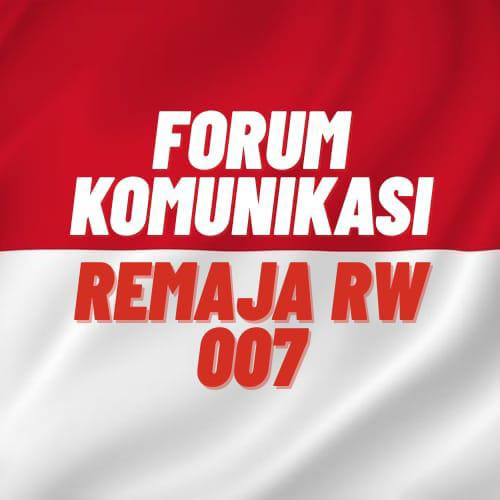

FORUM KOMUNIKASI REMAJA
Tempat bagi para remaja untuk berkomunikasi, berkarya, belajar, dan tumbuh bersama.
Kenal Lebih Dekat
CONNECT • CREATE • INSPIRE
ABOUT US
Forum Komunikasi Remaja atau FKR merupakan wadah bagi para remaja untuk berkumpul, berkomunikasi, belajar, dan melakukan berbagai kegiatan positif.
Melalui FKR, para remaja dapat mengembangkan kreativitas, membangun kebersamaan, serta berkontribusi positif bagi lingkungan sekitar.
OUR ACTIVITIES
Kegiatan memperingati Hari Kemerdekaan Republik Indonesia melalui berbagai lomba dan kegiatan kebersamaan.
Kegiatan Ramadhan yang diisi dengan aktivitas keagamaan, sosial, dan kebersamaan para remaja.
Kegiatan sosial sebagai bentuk kepedulian terhadap lingkungan dan masyarakat sekitar.
Kegiatan untuk meningkatkan kemampuan, kreativitas, dan kepercayaan diri remaja.
LET'S CONNECT
Ikuti perjalanan dan kegiatan Forum Komunikasi Remaja.